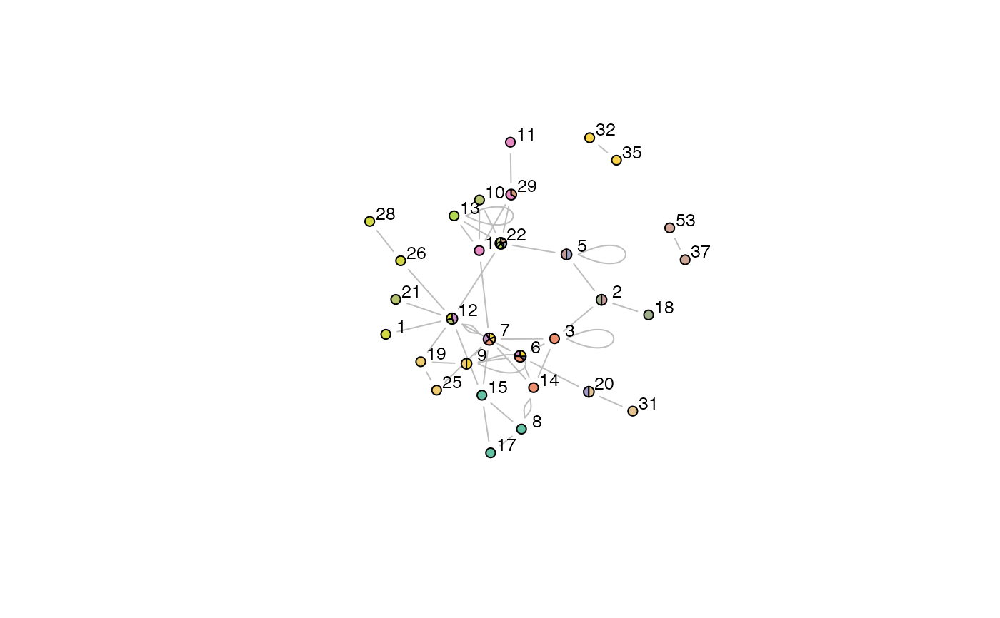

plotOCGraph.RdThis function is called by plot.OCG to plot a graph layout of the OCG communities.
plotOCGraph(x, clusterids = 1:x$numbers[3], nodes = NULL, pie.local = TRUE, incident = TRUE, layout = layout.fruchterman.reingold, vertex.radius = 0.03, scale.vertices = 0.05, edge.color = "grey", vertex.label.color = "black", vertex.label.cex = 0.8, pal = brewer.pal(7,"Set2"), shownodesin = 0, vlabel = TRUE, random = TRUE, ...)
| x | An object of class |
|---|---|
| clusterids | An integer vector of community IDs. Defaults to all communities. |
| nodes | A character vector naming the nodes to be plotted. If NULL, then community IDs are used instead. Defaults to NULL. |
| pie.local | Logical, whether to include pie segments for just the communities to which the chosen nodes belong, or for all communities. In the latter case, communities that are not present among the chosen nodes will appear as empty segments in the node pies. Defaults to TRUE. |
| incident | Logical, whether to include just the communities of the named node(s), or the community membership of all nodes that interact with the named node(s). Defaults to TRUE. |
| layout | A character string or function identifying the layout algorithm to be used for positioning nodes in the graph. Defaults to |
| vertex.radius | A real number specifying the vertex radius. Defaults to 0.03. |
| scale.vertices | A real number specifying the fraction of increase in vertex radius for each community membership. If NULL then all vertices are the same size. Defaults to 0.05. |
| edge.color | A character string specifying the colour of edges. Defaults to |
| vertex.label.color | A character string specifying the color of node labels. Defaults to |
| vertex.label.cex | A numerical value specifying the size of the node labels. Defaults to 0.8. |
| pal | A character vector describing a colour palette to be used for colouring the link communities in the graph. Defaults to |
| shownodesin | An integer value specifying the number of communities a node must belong to before it will be displayed. If 0 then all nodes are displayed. Defaults to 0. |
| vlabel | Logical, whether node labels are to be added. Defaults to TRUE. |
| random | Logical, whether to randomise the link colours. Defaults to TRUE. |
| ... | Additional arguments to be passed to |
Here we describe the parameters for plotting OCG community graphs using:
plot(x, type = "graph", layout = layout)
Various graph layouts are available:
layout.random
layout.circle
layout.sphere
layout.fruchterman.reingold
layout.kamada.kawai
layout.spring
layout.reingold.tilford
layout.fruchterman.reingold.grid
layout.lgl
layout.graphopt
layout.mds
layout.svd
layout.norm
All of these are described in more detail in the igraph package.
A graph plot.
Kalinka, A.T. and Tomancak, P. (2011). linkcomm: an R package for the generation, visualization, and analysis of link communities in networks of arbitrary size and type. Bioinformatics 27, 2011-2012.
Alex T. Kalinka alex.t.kalinka@gmail.com
plot.OCG, igraph.plotting
#> Calculating Initial class System....Done #> Nb. of classes 21 #> Nb. of edges not within the classes 11 #> Number of initial classes 21 #> Running.... #> Remaining classes: 20 of 21 Remaining classes: 10 of 21 Remaining classes: None #> Reading OCG data... #> Extracting cluster sizes... 5% Extracting cluster sizes... 11% Extracting cluster sizes... 17% Extracting cluster sizes... 23% Extracting cluster sizes... 29% Extracting cluster sizes... 35% Extracting cluster sizes... 41% Extracting cluster sizes... 47% Extracting cluster sizes... 52% Extracting cluster sizes... 58% Extracting cluster sizes... 64% Extracting cluster sizes... 70% Extracting cluster sizes... 76% Extracting cluster sizes... 82% Extracting cluster sizes... 88% Extracting cluster sizes... 94% Extracting cluster sizes... 100%#> Getting node community edge density...3% Getting node community edge density...6% Getting node community edge density...10% Getting node community edge density...13% Getting node community edge density...16% Getting node community edge density...20% Getting node community edge density...23% Getting node community edge density...26% Getting node community edge density...30% Getting node community edge density...33% Getting node community edge density...36% Getting node community edge density...40% Getting node community edge density...43% Getting node community edge density...46% Getting node community edge density...50% Getting node community edge density...53% Getting node community edge density...56% Getting node community edge density...60% Getting node community edge density...63% Getting node community edge density...66% Getting node community edge density...70% Getting node community edge density...73% Getting node community edge density...76% Getting node community edge density...80% Getting node community edge density...83% Getting node community edge density...86% Getting node community edge density...90% Getting node community edge density...93% Getting node community edge density...96% Getting node community edge density...100% #> Getting node layout... #> Constructing node pies...3% Constructing node pies...6% Constructing node pies...10% Constructing node pies...13% Constructing node pies...16% Constructing node pies...20% Constructing node pies...23% Constructing node pies...26% Constructing node pies...30% Constructing node pies...33% Constructing node pies...36% Constructing node pies...40% Constructing node pies...43% Constructing node pies...46% Constructing node pies...50% Constructing node pies...53% Constructing node pies...56% Constructing node pies...60% Constructing node pies...63% Constructing node pies...66% Constructing node pies...70% Constructing node pies...73% Constructing node pies...76% Constructing node pies...80% Constructing node pies...83% Constructing node pies...86% Constructing node pies...90% Constructing node pies...93% Constructing node pies...96% Constructing node pies...100%